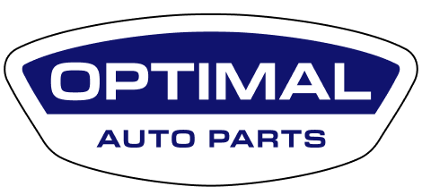

Sales Enquiry
Track your order: (857) 344-0627

Used Engines
Used Transmissions
Brands
Financing
About
Contact
Home
About
Used Engines
Used Transmissions
Brands
Contact Us
Financing
Auto Parts for Cadillac
Home
Cadillac
Cadillac Allante
Cadillac ATS
Cadillac Brougham
Cadillac CT6
Cadillac CTS
Cadillac Catera
Cadillac Cimarron
Cadillac Concours
Cadillac DeVille (1979 Down)
Cadillac DeVille (1980 Up)
Cadillac DHS
Cadillac DTS (2005 Down)
Cadillac DTS (2006 Up)
Cadillac ELR
Cadillac Eldorado (1966 Down)
Cadillac Eldorado (1967 Up)
Cadillac Escalade
Cadillac Escalade-ESV
Cadillac Escalade-EXT
Cadillac Fleetwood (1979 Down)
Cadillac Fleetwood (1980 Up)
Cadillac Seville (incl STS)
Cadillac SRX
Cadillac STS
Cadillac XLR
Cadillac XT4
Cadillac XT5
Cadillac XTS
Cadillac Other